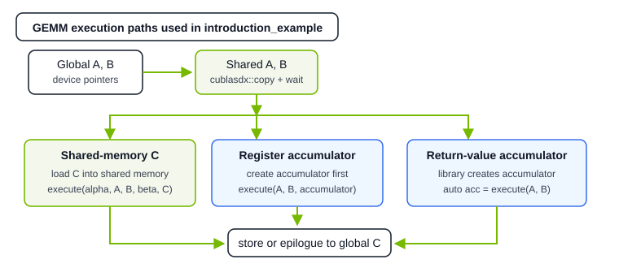
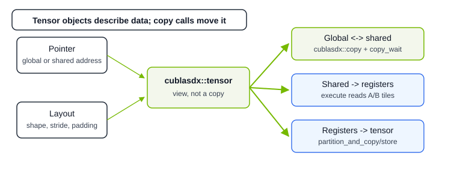

Using cuBLASDx GEMM#

In this introduction, we demonstrate how to perform general matrix multiplication using the cuBLASDx library. Two API families are provided:
Shared memory API: \(\mathbf{C}_{m\times n} = {\alpha} \times \mathbf{A}_{m\times k} \times \mathbf{B}_{k\times n} + {\beta} \times \mathbf{C}_{m\times n}\)Register API: \(\mathbf{C}_{m\times n} = \mathbf{A}_{m\times k} \times \mathbf{B}_{k\times n} + \mathbf{C}_{m\times n}\)
The register API can be written with an explicit accumulator object or with an accumulator returned by execute().

This section is based on the introduction_example.cu example included with cuBLASDx. See the Examples section for additional cuBLASDx samples.
Choosing A GEMM Path#
Start with the path that matches the kind of kernel you are writing:
Goal |
Start with |
Why |
|---|---|---|
First correct tile kernel |
Shared memory API |
It mirrors the usual |
Fusion or custom epilogue |
Register accumulator API |
It keeps GEMM results in registers so user code can update, transform, reduce, or store the output directly. |
Full-device GEMM |
The regular path is useful as a baseline; pipelining is the recommended high-performance path for large global-memory GEMMs. |
|
Performance tuning |
Learning Path Through Examples and Achieving High Performance |
The performance examples show tile sizes, layouts, alignment, pipeline depth, and launch settings in context. |
Defining The GEMM Operation#
The first step is to define the GEMM operation to be performed. This is accomplished by combining cuBLASDx operators to create a GEMM description. The correctness of this type is evaluated at compile time each time a new operator is added. A well-defined cuBLASDx GEMM routine description must specify:
The selected linear algebra routine — in this case, matrix multiplication:
cublasdx::function::MM.A valid and sufficient description of the inputs and outputs: the dimensions of the matrices (
m,n,k), the precision (half, float, double, etc.), the data type (real or complex), and the data arrangement of the matrices (row- or column-major).
Missing a required operator or providing an inconsistent combination results in a compile-time
static_assert — invalid descriptors are never silently accepted.
To obtain a descriptor for any of the operations described by:
\(\mathbf{C}_{m\times n} = \left[ {\alpha} \ \times \ \right] \ \mathbf{A}_{m\times k} \times \mathbf{B}_{k\times n} \ \left[\ + {\beta} \times \mathbf{C}_{m\times n} \right]\)
with m = n = k = 32, write the following lines:
#include <cublasdx.hpp>
using namespace cublasdx;
using GEMM = decltype(Size<32 /* m */, 32 /* n */, 32 /* k */>()
+ Precision<double>()
+ Type<type::real>()
+ Function<function::MM>()
+ Arrangement<cublasdx::row_major /* A */, cublasdx::col_major /* B */>());
In order to encode the operation properties, cuBLASDx provides operators
Size,
Precision,
Type,
Function, and
Arrangement,
which can be combined by using the standard addition operator (+).
Optionally, the user can set alignments and leading dimensions for each matrix using Alignment and LeadingDimension, respectively. When using custom inputs different from compute types, the Alignment Operator must be set to appropriate values.
Leading dimensions can also be set dynamically during execution, but dynamic values may affect performance.
Memory Layout Contract#
The descriptor defines logical GEMM shapes. Arrangement and leading dimensions define how those logical matrices map
to raw memory. For a non-transposed GEMM, use this contract as the first check before writing indexing, allocation, or
reference code:
Matrix |
Logical shape |
Default arrangement |
Leading dimension |
Element at logical |
|---|---|---|---|---|
|
|
|
|
|
|
|
|
|
|
|
|
|
|
|
For compact matrices, the leading dimension is the contiguous dimension shown above. For padded matrices, it must be at
least that value and must satisfy the alignment declared with Alignment Operator. If Arrangement is not
specified, cuBLASDx uses Arrangement<row_major, col_major, col_major>.
Note
The models above describe trivial row- and column-major memory layouts. cuBLASDx tensor APIs also accept arbitrary layouts, and cuBLASDx can precompute swizzled and vectorizable shared-memory layouts that help avoid shared-memory bank conflicts. Use suggest_layout_smem_*() for the suggested shared-memory layouts.
Tip
cuBLASDx also supports matrices that cannot simply be expressed by row- or column-major and leading dimensions. See simple_gemm_custom_layout.cu example.
To obtain a fully usable operation that executes GEMM on CUDA block level, we need to provide at least two additional pieces of information:
The first one is the SM Operator which indicates the targeted CUDA architecture on which we want to run the GEMM. Each GPU architecture is different, therefore each can use a different implementation and may require different CUDA block size for the best performance. In the introduction_example.cu example this is passed as template parameter, but in here we can assume we’re targeting Ada GPUs (
SM<890>()).Finally, we use the Block Operator to show that the BLAS routine will be performed by multiple threads in a single CUDA block. At this point, cuBLASDx performs additional verifications to make sure provided description is valid and that it is possible to execute it on the requested architecture.
#include <cublasdx.hpp>
using namespace cublasdx;
using GEMM = decltype(Size<32, 32, 32>()
+ Precision<double>()
+ Type<type::real>()
+ Function<function::MM>()
+ Arrangement<cublasdx::row_major, cublasdx::col_major>()
+ SM<890>()
+ Block());
User can also specify the layout and the number of threads that will be performing the GEMM.
This is done with the BlockDim Operator.
Adding BlockDim<X, Y, Z> means that the GEMM will only work correctly if a kernel is launched with block dimensions dim3(X1, Y1, Z1) where
X1 >= X, Y1 >= Y, and Z1 >= Z. If there are more than one dimensions and each has size greater than 1 then only the last can be greater than specified configuration.
Detailed requirements can be found in the section dedicated to BlockDim operator.
If BlockDim operator is not used, cuBLASDx will select preferred block size that can be obtained with GEMM::block_dim.
Tip
If there is no need to set custom block dimensions, it is recommended not to use BlockDim operator and rely on GEMM::block_dim.
For more details, see Block Execute Method section, BlockDim Operator, and
Suggested Block Dim Trait.
For this sample, let’s assume we want to use a 1D CUDA thread block with 256 threads.
#include <cublasdx.hpp>
using namespace cublasdx;
using GEMM = decltype(Size<32, 32, 32>()
+ Precision<double>()
+ Type<type::real>()
+ Function<function::MM>()
+ Arrangement<cublasdx::row_major, cublasdx::col_major>()
+ SM<890>()
+ Block()
+ BlockDim<256>());
Executing GEMM#
The GEMM class, which describes the matrix multiplication, can be instantiated as an object (or multiple objects).
Instantiating the object has no computational cost and should be considered a handle.
The function descriptor object provides compute methods, such as execute(...), that perform the requested operation.
#include <cublasdx.hpp>
using namespace cublasdx;
using GEMM = decltype(Size<32, 32, 32>()
+ Precision<double>()
+ Type<type::real>()
+ Function<function::MM>()
+ Arrangement<cublasdx::row_major, cublasdx::col_major>()
+ SM<890>()
+ Block());
__global__ void gemm_kernel(double alpha, double *a, double *b, double beta, double *c) {
// Execute GEMM
GEMM().execute(/* What are the arguments? */);
}
Starting from cuBLASDx 0.2.0, the execute method takes tensors (cublasdx::tensor) as inputs and outputs.
cublasdx::tensor is an alias of a CuTe tensor (cute::Tensor),
which is a representation of a multidimensional array that holds
data in any kind of memory, including global memory, shared memory and register memory, and
a CuTe layout (cute::Layout) describing how elements are organized.

Tensor Creation#
Tensor Partitioning#
Starting with cuBLASDx 0.3.0 and the register fragment APIs, the library offers new interfaces for efficient partitioning of global and shared memory tensors among threads participating in GEMM, as well as subsequent modification of these register tensors. The entry point for these operations is an Accumulator object tied to a specific GEMM instance:
auto accumulator = GEMM::get_accumulator(); auto accumulator = GEMM::suggest_accumulator();
Such an object allows you to:
Create a register fragment accumulator for this GEMM
Map fragment indices to global tensor indices
Partition other tensors like
Cto obtain their subtensorsApply predication to out-of-bounds elements and threads
Perform gathers and scatters between partitioned register fragments and shared/global memory tensors
Please refer to Accumulator And Register Fragment Tensors for more details.
Warning
A register fragment can be used as an accumulator ONLY with the GEMM instance from which it was created
Register Fragment Accumulators#
A register fragment accumulator is an array stored in thread-local register file (RF) memory, wrapped in a
cublasdx::tensor with an opaque layout describing internal GEMM execution. Unlike global and shared memory tensors,
this layout may not be arbitrary and can only be obtained from an accumulator object
(see Accumulator And Register Fragment Tensors).
Note
A register fragment is an opaque hierarchical tensor exposing a 1D tensor interface
Implementation details of the specific layout of any register fragment are tied to GEMM execution,
but each fragment can be accessed with 1D indices ranging from 0 to cublasdx::size(register_fragment)
Each register fragment accumulator represents a fragment of a global or shared memory matrix, determined by the index
of the thread holding it and the GEMM instance from which it was created. cuBLASDx exposes two ways of mapping memory from
thread-local index space to the entire tensor index space:
Through manual index mapping utilities of an accumulator object
Through automatic copying functions, which have gather/scatter semantics
See Copying Register Fragments and Copying Register Tensors for more information.
To obtain a register fragment for a GEMM instance, simply obtain an accumulator and use it to get results:
// 1. Get default accumulator
auto accumulator = BLAS::get_accumulator();
// 2. Execute BLAS using that accumulator
BLAS().execute(..., accumulator);
// 3. Get results in form of a register fragment
auto accumulator_fragment = accumulator.get_results();
// Now you can access it as a regular 1D tensor:
auto val_0 = accumulator_fragment(0);
Note
Accumulator doesn’t contain a register fragment
Starting with Blackwell SM100a CUDA architecture targets, it’s possible to accumulate
results of matrix multiplication directly in Tensor Memory (TMEM). Accumulator works
opaquely with respect to that and provides a function .get_results() supporting
any underneath implementation
Copying Tensors#
Copying Register Fragments#
To copy register fragments with GEMM results cuBLASDx exposes an extensive accumulator interface as well as offers a helper
function, cublasdx::copy_fragment(...), responsible for performing loads and stores between a local tensor fragment and
appropriate locations in a global or shared tensor.
The copy_fragment function accounts for the given alignments and attempts to vectorize the load and store when possible.
- This copy is a per-thread operation, and global / shared data partitioning is based on:
accumulator object containing appropriate GEMM execution details
thread index (stored in accumulator object)
// Load data from global memory tensor to shared memory tensor
using alignment = cublasdx::alignment_of<GEMM>;
auto accumulator = GEMM::get_accumulator();
auto c_fragment_accumulator = accumulator.get_results();
// Load data from global to registers
cublasdx::copy_fragment<alignment::c>(c_tensor, c_fragment_accumulator, accumulator);
// Store data from registers to global
cublasdx::copy_fragment<alignment::c>(c_fragment_accumulator, c_tensor, accumulator);
Accumulator object offers many helper APIs allowing for significant flexibility in data operations. See Accumulator And Register Fragment Tensors for more details.
The functions exposed by accumulator directly (such as partition_and_copy, make_partition_and_copy, partition_and_store) are helper
wrappers around copy_fragment that fill the necessary fields with properties of the GEMM and combine several operations (e.g. make_partition_and_copy is just make_empty_fragment + partition_like_C + copy_fragment)
// Load data from global memory tensor to shared memory tensor
using alignment = cublasdx::alignment_of<GEMM>;
auto accumulator = GEMM::get_accumulator();
// Load data from global to registers
auto c_register_fragment = accumulator.make_partition_and_copy(c_tensor);
// Store result data from registers to global
accumulator.partition_and_store(c_tensor);
// Store arbitrary register fragment to global
accumulator.partition_and_copy(c_register_fragment, c_tensor);
Full-Device Regular GEMM#
A block-level GEMM descriptor computes one tile_m x tile_n output tile for one tile_k slice of the
reduction dimension. To cover a full global M x N output matrix without the pipeline API, launch one CUDA block per
output tile and loop over the global K dimension inside the block.
This regular path is useful when learning the mapping from global tensors to block tiles, or when you need a simple baseline before moving to Using Pipelined GEMM. For high-performance global-memory GEMM, prefer the pipelined API whenever the problem shape satisfies its requirements.
Note
cuBLASDx also offers a pipeline API for full-device GEMM. It exposes TMA, WGMMA, and UTCMMA pipeline instructions and is intended to allow fusion with multi-block device GEMMs. See Using Pipelined GEMM.
The host side creates global-memory tensors for the full matrices and launches a 2D grid:
constexpr unsigned tile_m = cublasdx::size_of_v_m<GEMM>;
constexpr unsigned tile_n = cublasdx::size_of_v_n<GEMM>;
auto global_a = cublasdx::make_gmem_tensor<cublasdx::row_major>(a, m, k, lda);
auto global_b = cublasdx::make_gmem_tensor<cublasdx::col_major>(b, k, n, ldb);
auto global_c = cublasdx::make_gmem_tensor<cublasdx::col_major>(c, m, n, ldc);
dim3 grid_dim = {m / tile_m, n / tile_n, 1};
auto shared_memory_size = cublasdx::get_shared_storage_size_ab<GEMM>();
gemm_full_kernel<GEMM><<<grid_dim, GEMM::block_dim, shared_memory_size>>>(
alpha, global_a, global_b, beta, global_c);
With this convention, blockIdx.x is the output tile row and blockIdx.y is the output tile column. The kernel
extracts the row of A tiles, the column of B tiles, and the one C tile owned by the block:
template<class GEMM, class Alpha, class ATensor, class BTensor, class Beta, class CTensor>
__launch_bounds__(GEMM::max_threads_per_block, 1) __global__
void gemm_full_kernel(Alpha alpha, ATensor global_a, BTensor global_b, Beta beta, CTensor global_c) {
extern __shared__ __align__(16) cublasdx::byte smem[];
using alignment = cublasdx::alignment_of<GEMM>;
auto [smem_a, smem_b] = cublasdx::slice_shared_memory_ab<GEMM>(smem);
auto a_shared = cublasdx::make_tensor(smem_a, GEMM::suggest_layout_smem_a());
auto b_shared = cublasdx::make_tensor(smem_b, GEMM::suggest_layout_smem_b());
auto tile_a_row = cublasdx::get_tile_row(global_a, GEMM::a_shape, blockIdx.x);
auto tile_b_col = cublasdx::get_tile_col(global_b, GEMM::b_shape, blockIdx.y);
auto tile_c = cublasdx::get_tile(global_c, GEMM::c_shape, blockIdx.x, blockIdx.y);
auto accumulator = GEMM::suggest_accumulator();
const auto k_tiles = cute::get<2>(cute::shape(tile_a_row.layout()));
for (int k_tile = 0; k_tile < k_tiles; ++k_tile) {
cublasdx::copy<GEMM, alignment::a>(tile_a_row(cublasdx::slice, cublasdx::slice, k_tile), a_shared);
cublasdx::copy<GEMM, alignment::b>(tile_b_col(cublasdx::slice, cublasdx::slice, k_tile), b_shared);
cublasdx::copy_wait();
GEMM().execute(a_shared, b_shared, accumulator);
__syncthreads();
}
auto d_fragment = accumulator.make_partition_and_copy(tile_c);
cublasdx::axpby(alpha, accumulator.get_results(), beta, d_fragment);
accumulator.partition_and_copy(d_fragment, tile_c);
}
This basic pattern assumes the global dimensions are divisible by the tile dimensions.
Accumulator Register GEMM API#
A typical structure of a register accumulation API GEMM kernel is as follows:
#include <cublasdx.hpp>
using namespace cublasdx;
using GEMM = decltype(Size<32, 32, 32>()
+ Precision<double>()
+ Type<type::real>()
+ Function<function::MM>()
+ Arrangement<cublasdx::row_major, cublasdx::col_major>()
+ SM<890>()
+ Block());
// Type <a/b/c>_value_type is defined based on the GEMM description. Precision operator defines its numerical
// precision, and via Type operator user specifies if it is complex or real.
//
// In this case, a/b/c_value_type are all double since set precision is double, and type is real.
using a_value_type = typename GEMM::a_value_type;
using b_value_type = typename GEMM::b_value_type;
using c_value_type = typename GEMM::c_value_type;
__global__ void gemm_kernel_registers_accumulation(a_value_type *a, b_value_type *b, c_value_type *c) {
extern __shared__ __align__(16) cublasdx::byte smem[];
// Create global memory tensor
// a_global_tensor = (from a)
// b_global_tensor = (from b)
// c_global_tensor = (from c)
// Make shared memory tensor
// a_shared_tensor = (from smem)
// b_shared_tensor = (from smem + ...)
// Load data from global memory tensor to shared memory tensor
// a_shared_tensor <-- a_global_tensor
// b_shared_tensor <-- b_global_tensor
// Make C register Accumulator fragment
auto accumulator = GEMM::get_accumulator();
// Execute GEMM
GEMM().execute(a_shared_tensor, b_shared_tensor, accumulator);
// Store data from shared memory tensor to global memory tensor
// c_global_tensor <-- c_register_accumulator
}
This API is more involved, adding extra steps for C accumulator:
Create global and shared memory tensors (see Tensor Creation).
Copy data from global memory tensors to shared memory tensors (see Copying Tensors).
Create opaque
Caccumulator tensor(main step) Execute
GEMMusing the tensor APIs.Copy data from register results tensor to appropriate places in global memory tensor (see Copying Tensors).
After filling all these steps in with tensor creation and copying code, we get:
#include <cublasdx.hpp>
using namespace cublasdx;
template<class GEMM>
__global__ void gemm_kernel_registers_accumulation(const typename GEMM::a_value_type* a,
const typename GEMM::b_value_type* b,
typename GEMM::c_value_type* c) {
extern __shared__ __align__(16) cublasdx::byte smem[];
// Make global memory tensor
auto a_global_tensor = cublasdx::make_tensor(a, GEMM::get_layout_gmem_a());
auto b_global_tensor = cublasdx::make_tensor(b, GEMM::get_layout_gmem_b());
auto c_global_tensor = cublasdx::make_tensor(c, GEMM::get_layout_gmem_c());
// Make shared memory tensor
auto [smem_a, smem_b] = cublasdx::slice_shared_memory_ab<GEMM>(smem);
auto a_shared_tensor = cublasdx::make_tensor(smem_a, GEMM::get_layout_smem_a());
auto b_shared_tensor = cublasdx::make_tensor(smem_b, GEMM::get_layout_smem_b());
// Load data from global memory tensor to shared memory tensor
using alignment = cublasdx::alignment_of<GEMM>;
cublasdx::copy<GEMM, alignment::a>(a_global_tensor, a_shared_tensor);
cublasdx::copy<GEMM, alignment::b>(b_global_tensor, b_shared_tensor);
cublasdx::copy_wait();
// Get default data accumulator
auto accumulator = GEMM::get_accumulator();
// Execute GEMM with accumulation
GEMM().execute(a_shared_tensor, b_shared_tensor, accumulator);
// Partition Global C for GEMM and store appropriate elements to global memory
auto results = accumulator.get_results();
// Perform any epilogue on result data
// ...
// Store data back
accumulator.partition_and_copy(results, c_global_tensor);
}
Return Value Register GEMM API#
A typical structure of a return value register API GEMM kernel is as follows:
#include <cublasdx.hpp>
using namespace cublasdx;
using GEMM = decltype(Size<32, 32, 32>()
+ Precision<double>()
+ Type<type::real>()
+ Function<function::MM>()
+ Arrangement<cublasdx::row_major, cublasdx::col_major>()
+ SM<890>()
+ Block());
// Type <a/b/c>_value_type is defined based on the GEMM description. Precision operator defines its numerical
// precision, and via Type operator user specifies if it is complex or real.
//
// In this case, a/b/c_value_type are all double since set precision is double, and type is real.
using a_value_type = typename GEMM::a_value_type;
using b_value_type = typename GEMM::b_value_type;
using c_value_type = typename GEMM::c_value_type;
__global__ void gemm_kernel(c_value_type alpha, a_value_type *a, b_value_type *b, c_value_type beta, c_value_type *c) {
extern __shared__ __align__(16) cublasdx::byte smem[];
// Create global memory tensor
// a_global_tensor = (from a)
// b_global_tensor = (from b)
// c_global_tensor = (from c)
// Make shared memory tensor
// a_shared_tensor = (from smem)
// b_shared_tensor = (from smem + ...)
// Load data from global memory tensor to shared memory tensor
// a_shared_tensor <-- a_global_tensor
// b_shared_tensor <-- b_global_tensor
// Execute GEMM
auto accumulator = GEMM().execute(a_shared_tensor, b_shared_tensor);
// Partition Global C for GEMM and store appropriate elements to global memory
// c_global_tensor <-- c_register_fragment
}
This API doesn’t expect the register fragment upfront, but returns it as a result:
Create global and shared memory tensors (see Tensor Creation).
Copy data from global memory tensors to shared memory tensors (see Copying Tensors).
(main step) Execute
GEMMusing the tensor APIs, getting results as an opaque accumulator.Copy data from result accumulator tensor to appropriate places in global memory tensor (see Copying Tensors).
After filling all these steps in with tensor creation and copying code, we get:
#include <cublasdx.hpp>
using namespace cublasdx;
template<class GEMM>
__global__ void gemm_kernel_registers(const typename GEMM::a_value_type* a,
const typename GEMM::b_value_type* b,
typename GEMM::c_value_type* c) {
extern __shared__ __align__(16) cublasdx::byte smem[];
// Make global memory tensor
auto a_global_tensor = cublasdx::make_tensor(a, GEMM::get_layout_gmem_a());
auto b_global_tensor = cublasdx::make_tensor(b, GEMM::get_layout_gmem_b());
auto c_global_tensor = cublasdx::make_tensor(c, GEMM::get_layout_gmem_c());
// Make shared memory tensor
auto [smem_a, smem_b] = cublasdx::slice_shared_memory_ab<GEMM>(smem);
auto a_shared_tensor = cublasdx::make_tensor(smem_a, GEMM::get_layout_smem_a());
auto b_shared_tensor = cublasdx::make_tensor(smem_b, GEMM::get_layout_smem_b());
// Load data from global memory tensor to shared memory tensor
using alignment = cublasdx::alignment_of<GEMM>;
cublasdx::copy<GEMM, alignment::a>(a_global_tensor, a_shared_tensor);
cublasdx::copy<GEMM, alignment::b>(b_global_tensor, b_shared_tensor);
cublasdx::copy_wait();
// Execute GEMM and get register fragment results and data accumulator in return
auto accumulator = GEMM().execute(a_shared_tensor, b_shared_tensor);
// Partition Global C for GEMM and store appropriate elements to global memory
auto results = accumulator.get_results();
// Perform any epilogue on result data
// ...
// Store data back
accumulator.partition_and_copy(results, c_global_tensor);
}
Launching GEMM Kernel#
To launch a kernel executing the defined GEMM we need to know the required block dimensions and the amount of shared memory needed for all
three matrices - A, B, C. Elements in the matrix A should be in a row-major format, and matrices B and C in a column-major format, accounting for leading dimensions.
#include <cublasdx.hpp>
using namespace cublasdx;
// Kernels are unfolded in their appropriate sections above
template<class GEMM>
__global__ void gemm_kernel_shared(const typename GEMM::c_value_type alpha,
const typename GEMM::a_value_type* a,
const typename GEMM::b_value_type* b,
const typename GEMM::c_value_type beta,
typename GEMM::c_value_type* c)
{
...
}
template<class GEMM>
__global__ void gemm_kernel_registers(const typename GEMM::a_value_type* a,
const typename GEMM::b_value_type* b,
typename GEMM::c_value_type* c)
{
...
}
// CUDA_CHECK_AND_EXIT - macro checks if function returns cudaSuccess; if not it prints the error code and exits the program
void introduction_example(double *a, double *b, double *c) {
using GEMM = decltype(Size<32, 32, 32>()
+ Precision<double>()
+ Type<type::real>()
+ Arrangement<cublasdx::row_major, cublasdx::col_major>()
+ Function<function::MM>()
+ SM<890>()
+ Block());
// Shared memory API: C = alpha * A * B + beta * C
// Invokes kernel with GEMM::block_dim threads in CUDA block
gemm_kernel_shared<GEMM><<<1, GEMM::block_dim, cublasdx::get_shared_storage_size<GEMM>()>>>(1.0, a, b, 1.0, c);
// Register fragment API: C = A * B
// Invokes kernel with GEMM::block_dim threads in CUDA block
gemm_kernel_registers<GEMM><<<1, GEMM::block_dim, cublasdx::get_shared_storage_size_ab<GEMM>()>>>(a, b, c);
CUDA_CHECK_AND_EXIT(cudaPeekAtLastError());
CUDA_CHECK_AND_EXIT(cudaDeviceSynchronize());
}
The required shared memory can be obtained using:
cublasdx::get_shared_storage_size<GEMM>()— size for all three matricesA,B, andC(use this with the shared-memory GEMM API).cublasdx::get_shared_storage_size_ab<GEMM>()— size forAandBonly, omittingC(use this with the register-accumulator GEMM API, whereClives in registers rather than shared memory).
Both account for any padding declared using LeadingDimension Operator and resulting from Alignment Operator.
For simplicity, the example allocates managed memory for device matrices, assumes an Ada SM 89 target, and omits most CUDA API error checks in the surrounding setup code. Please check the full introduction_example.cu example, as well as others shipped with cuBLASDx, for more detailed code.
#include <iostream>
#include <vector>
#include <cuda_runtime_api.h>
#include <cublasdx.hpp>
#include "../common/common.hpp"
#include "../reference/reference.hpp"
template<class GEMM>
__global__ void gemm_kernel_shared(const typename GEMM::c_value_type alpha,
const typename GEMM::a_value_type* a,
const typename GEMM::b_value_type* b,
const typename GEMM::c_value_type beta,
typename GEMM::c_value_type* c) {
extern __shared__ __align__(16) cublasdx::byte smem[];
// Make global memory tensor
auto a_global_tensor = cublasdx::make_tensor(a, GEMM::get_layout_gmem_a());
auto b_global_tensor = cublasdx::make_tensor(b, GEMM::get_layout_gmem_b());
auto c_global_tensor = cublasdx::make_tensor(c, GEMM::get_layout_gmem_c());
// Make shared memory tensor
auto [smem_a, smem_b, smem_c] = cublasdx::slice_shared_memory<GEMM>(smem);
auto a_shared_tensor = cublasdx::make_tensor(smem_a, GEMM::get_layout_smem_a());
auto b_shared_tensor = cublasdx::make_tensor(smem_b, GEMM::get_layout_smem_b());
auto c_shared_tensor = cublasdx::make_tensor(smem_c, GEMM::get_layout_smem_c());
// Load data from global memory tensor to shared memory tensor
using alignment = cublasdx::alignment_of<GEMM>;
cublasdx::copy<GEMM, alignment::a>(a_global_tensor, a_shared_tensor);
cublasdx::copy<GEMM, alignment::b>(b_global_tensor, b_shared_tensor);
cublasdx::copy<GEMM, alignment::c>(c_global_tensor, c_shared_tensor);
cublasdx::copy_wait();
// Execute GEMM
GEMM().execute(alpha, a_shared_tensor, b_shared_tensor, beta, c_shared_tensor);
__syncthreads();
// Store data from shared memory tensor to global memory tensor
cublasdx::copy<GEMM, alignment::c>(c_shared_tensor, c_global_tensor);
}
template<class GEMM>
__global__ void gemm_kernel_registers(const typename GEMM::a_value_type* a,
const typename GEMM::b_value_type* b,
typename GEMM::c_value_type* c) {
extern __shared__ __align__(16) cublasdx::byte smem[];
// Make global memory tensor
auto a_global_tensor = cublasdx::make_tensor(a, GEMM::get_layout_gmem_a());
auto b_global_tensor = cublasdx::make_tensor(b, GEMM::get_layout_gmem_b());
auto c_global_tensor = cublasdx::make_tensor(c, GEMM::get_layout_gmem_c());
// Make shared memory tensor
auto [smem_a, smem_b] = cublasdx::slice_shared_memory_ab<GEMM>(smem);
auto a_shared_tensor = cublasdx::make_tensor(smem_a, GEMM::get_layout_smem_a());
auto b_shared_tensor = cublasdx::make_tensor(smem_b, GEMM::get_layout_smem_b());
// Load data from global memory tensor to shared memory tensor
using alignment = cublasdx::alignment_of<GEMM>;
cublasdx::copy<GEMM, alignment::a>(a_global_tensor, a_shared_tensor);
cublasdx::copy<GEMM, alignment::b>(b_global_tensor, b_shared_tensor);
cublasdx::copy_wait();
// Execute GEMM and get register fragment results and data accumulator in return
auto accumulator = GEMM().execute(a_shared_tensor, b_shared_tensor);
// alternatively
// auto accumulator = GEMM::get_accumulator();
// GEMM().execute(a_shared_tensor, b_shared_tensor, accumulator);
// axpby computes C = alpha * GEMM_result + beta * C in-place, writing the final
// result directly to c_global_tensor (scatter from registers to global memory).
accumulator.axpby(alpha, beta, c_global_tensor);
// alternatively:
// auto d_fragment = accumulator.make_partition_and_copy(c_global_tensor);
// cublasdx::axpby(alpha, accumulator.get_results(), beta, d_fragment);
// accumulator.partition_and_copy(d_fragment, c_global_tensor);
}
template<unsigned int Arch>
int introduction_example() {
using GEMM = decltype(cublasdx::Size<32, 32, 32>()
+ cublasdx::Precision<double>()
+ cublasdx::Type<cublasdx::type::real>()
+ cublasdx::Arrangement<cublasdx::row_major, cublasdx::col_major>()
+ cublasdx::Function<cublasdx::function::MM>()
+ cublasdx::SM<Arch>()
+ cublasdx::Block()
+ cublasdx::BlockDim<256>());
using value_type = typename example::uniform_value_type_t<GEMM>;
constexpr auto global_a_size = example::global_memory_size_of<GEMM>::a_size;
constexpr auto global_b_size = example::global_memory_size_of<GEMM>::b_size;
constexpr auto global_c_size = example::global_memory_size_of<GEMM>::c_size;
// Allocate managed memory for A, B, C matrices in one go
value_type* abc;
auto size = global_a_size + global_b_size + global_c_size;
auto size_bytes = size * sizeof(value_type);
CUDA_CHECK_AND_EXIT(cudaMallocManaged(&abc, size_bytes));
// Generate data
for (size_t i = 0; i < size; i++) {
abc[i] = static_cast<value_type>(static_cast<double>((i % 17) + 1) / 17.0);
}
value_type* a = abc;
value_type* b = abc + global_a_size;
value_type* c = abc + global_a_size + global_b_size;
// Shared memory API: C = alpha * A * B + beta * C
// Invokes kernel with GEMM::block_dim threads in CUDA block
gemm_kernel_shared<GEMM><<<1, GEMM::block_dim, cublasdx::get_shared_storage_size<GEMM>()>>>(1.0, a, b, 1.0, c);
// Register fragment API: C = A * B
// Invokes kernel with GEMM::block_dim threads in CUDA block
gemm_kernel_registers<GEMM><<<1, GEMM::block_dim, cublasdx::get_shared_storage_size_ab<GEMM>()>>>(a, b, c);
CUDA_CHECK_AND_EXIT(cudaPeekAtLastError());
CUDA_CHECK_AND_EXIT(cudaDeviceSynchronize());
std::vector<value_type> host_a(a, a + global_a_size);
std::vector<value_type> host_b(b, b + global_b_size);
std::vector<value_type> host_c(c, c + global_c_size);
auto reference_host_output = example::reference_gemm<GEMM>(
static_cast<value_type>(1.0), host_a, host_b, static_cast<value_type>(0.0), host_c);
bool correct = example::check_error<GEMM>(host_c, reference_host_output);
CUDA_CHECK_AND_EXIT(cudaFree(abc));
if (correct) {
std::cout << "Success" << std::endl;
return 0;
}
std::cout << "Failure" << std::endl;
return 1;
}
struct introduction_example_functor {
template<int Arch, cublasdx::sm_modifier Modifier>
int operator()(std::integral_constant<int, Arch>, std::integral_constant<cublasdx::sm_modifier, Modifier>) {
return introduction_example<Arch>();
}
};
int main(int, char**) {
return example::sm_runner(introduction_example_functor{});
}
It is important to note that, unlike the cuBLAS library, cuBLASDx does not require moving data back to global memory after executing a BLAS operation. Nor does it require the input data to be loaded from global memory. These properties can provide a major performance advantage for certain use cases. The list of possible optimizations includes, but is not limited to:
Fusing BLAS routines with custom pre- and post-processing.
Fusing multiple BLAS operations together.
Fusing BLAS and FFT operations (using cuFFTDx) together.
Generating input matrices or parts of them.
Troubleshooting First GEMM Kernels#
If a first cuBLASDx GEMM does not compile, launch, or match a reference result, check these items first:
Symptom |
Common cause |
What to check |
|---|---|---|
Kernel does not compile for the selected GEMM. |
The descriptor |
Build for the GPU you will run on, keep |
Kernel launch fails with an invalid configuration or resource error. |
The launch block size or dynamic shared-memory size does not match the descriptor. |
Launch regular GEMM kernels with |
Shared-memory GEMM returns incorrect values. |
The kernel used |
Use |
Register-accumulator GEMM returns incorrect values. |
The accumulator does not match the shared-memory layouts. |
Use |
Results are inconsistent or depend on small code changes. |
A global/shared copy is read before it has completed. |
Call |
Reference comparison fails after changing layout or leading dimensions. |
|
Re-check the Memory Layout Contract above. If |
A pipelined version fails after the regular version works. |
The launch still uses |
Launch with |
Compilation#
For instructions on how to compile programs with cuBLASDx, see the Quick Installation Guide.